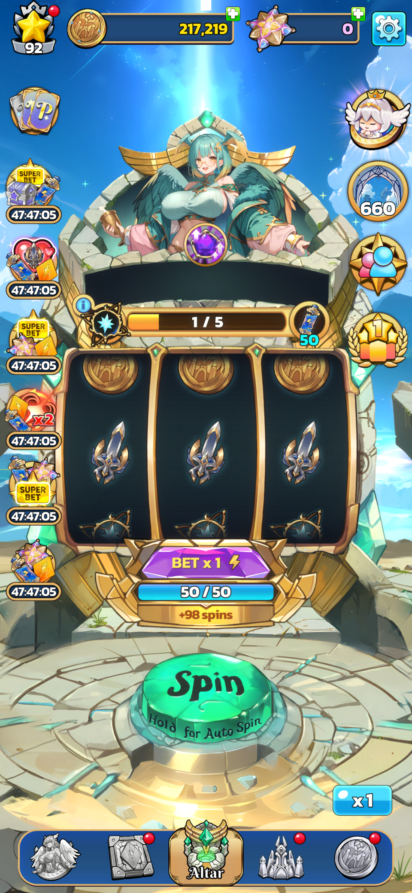

01
Enchant — the “Seal” minigame
- The minigame loop — built the standalone scene where the player taps NPCs to capture rare servants (up to four a run), with a “Perfect Seal” bonus for a clean sweep.
- Competitive matchmaking — players are matched against other kingdoms (or bots) to seal their servants.
- Reward system — coins through a multi-factor multiplier chain (bet, combo, relationship, blessing, ability) plus tournament tokens.
- Servant abilities — ability hooks that transform outcomes: rescuing a failed catch, auto-sealing, or revealing a reward early.
- Weighted-RNG outcomes — per-slot outcome weighting with anti-streak guards and a backend-guaranteed servant that surfaces at a random slot; plus premium auto-play.
02
Slot (“Spin”)
- Maintained and refactored the core slot (“Spin”) feature — the heart of the game — working through a large, long-standing body of legacy code.
03
Team Formation
- The formation screen — assign one servant to each of three modes (slot, the sealing minigame, and PvE); the assigned servant powers that mode's bonuses.
- Servant cards — level, active ability, passive bonus, relationship rank, and a daily-rotating blessing that highlights matching servants.
- Picker & persistence — an assign/confirm flow that persists the choice, alongside the card-info and level-up popups.
04
Gameplay
Fortune Kingdom — official trailer (click to watch with sound).


